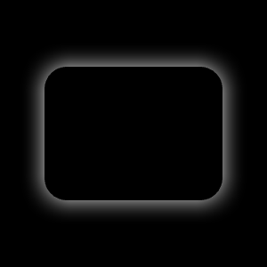
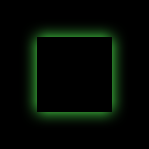
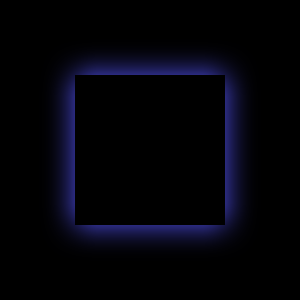
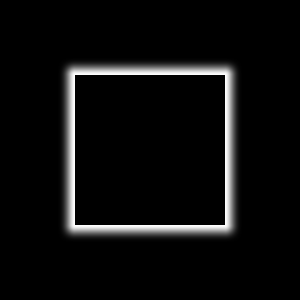
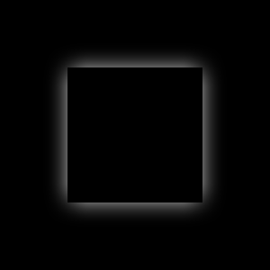
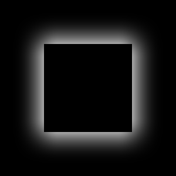

RectangularGlow QML Type
Generates a blurred and colorized rectangle, which gives the impression that the source is glowing. More...
| Import Statement: | import Qt5Compat.GraphicalEffects |
| Since: | QtGraphicalEffects 1.0 |
| Inherits: |
Properties
- cached : bool
- color : color
- cornerRadius : real
- glowRadius : real
- spread : real
Detailed Description
This effect is intended to have good performance. The shape of the glow is limited to a rectangle with a custom corner radius. For situations where custom shapes are required, consider Glow effect.
| Effect applied |
|---|
 |
Example
The following example shows how to apply the effect.
import QtQuick import Qt5Compat.GraphicalEffects Item { width: 300 height: 300 Rectangle { id: background anchors.fill: parent color: "black" } RectangularGlow { id: effect anchors.fill: rect glowRadius: 10 spread: 0.2 color: "white" cornerRadius: rect.radius + glowRadius } Rectangle { id: rect color: "black" anchors.centerIn: parent width: Math.round(parent.width / 1.5) height: Math.round(parent.height / 2) radius: 25 } }
Property Documentation
cached : bool |
This property allows the effect output pixels to be cached in order to improve the rendering performance.
Every time the source or effect properties are changed, the pixels in the cache must be updated. Memory consumption is increased, because an extra buffer of memory is required for storing the effect output.
It is recommended to disable the cache when the source or the effect properties are animated.
By default, the property is set to false.
color : color |
This property defines the RGBA color value which is used for the glow.
By default, the property is set to "white".
| Output examples with different color values | ||
|---|---|---|
|  |  |
| color: #ffffff | color: #55ff55 | color: #5555ff |
| glowRadius: 20 | glowRadius: 20 | glowRadius: 20 |
| spread: 0 | spread: 0 | spread: 0 |
| cornerRadius: 25 | cornerRadius: 25 | cornerRadius: 25 |

cornerRadius : real |
This property defines the corner radius that is used to draw a glow with rounded corners.
The value ranges from 0.0 to half of the effective width or height of the glow, whichever is smaller. This can be calculated with: min(width, height) / 2.0 + glowRadius
By default, the property is bound to glowRadius property. The glow behaves as if the rectangle was blurred when adjusting the glowRadius property.
| Output examples with different cornerRadius values | ||
|---|---|---|
 |
| |
| cornerRadius: 0 | cornerRadius: 25 | cornerRadius: 50 |
| glowRadius: 20 | glowRadius: 20 | glowRadius: 20 |
| spread: 0 | spread: 0 | spread: 0 |
| color: #ffffff | color: #ffffff | color: #ffffff |

glowRadius : real |
This property defines how many pixels outside the item area are reached by the glow.
The value ranges from 0.0 (no glow) to inf (infinite glow). By default, the property is set to 0.0.
| Output examples with different glowRadius values | ||
|---|---|---|
 |  | |
| glowRadius: 10 | glowRadius: 20 | glowRadius: 40 |
| spread: 0 | spread: 0 | spread: 0 |
| color: #ffffff | color: #ffffff | color: #ffffff |
| cornerRadius: 25 | cornerRadius: 25 | cornerRadius: 25 |
spread : real |
This property defines how large part of the glow color is strengthened near the source edges.
The value ranges from 0.0 (no strength increase) to 1.0 (maximum strength increase). By default, the property is set to 0.0.
| Output examples with different spread values | ||
|---|---|---|
| ||
| spread: 0.0 | spread: 0.5 | spread: 1.0 |
| glowRadius: 20 | glowRadius: 20 | glowRadius: 20 |
| color: #ffffff | color: #ffffff | color: #ffffff |
| cornerRadius: 25 | cornerRadius: 25 | cornerRadius: 25 |